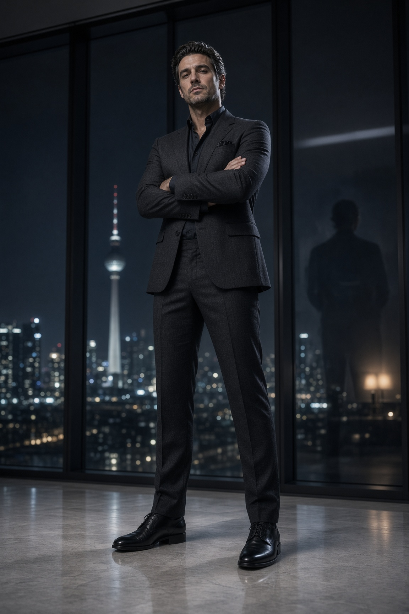

Descubrir
Localizar la biblioteca y los tres identificadores exactos únicamente a través de recursos públicos.
¿Puede una inteligencia artificial encontrar, recuperar y combinar por sí misma componentes JSON publicados en la web? Pusimos a prueba la biblioteca AXFRA con ChatGPT, Gemini y Grok.
AXFRA organiza decisiones de composición visual en módulos JSON independientes. El desafío buscó establecer si tres asistentes de IA podían descubrir una biblioteca pública sin recibir archivos adjuntos, recuperar los módulos solicitados y construir una composición estructuralmente correcta.
La solicitud fue idéntica: encontrar un ático de cristal, una pose de pie con brazos cruzados y una cámara en contrapicado; recuperar los JSON originales y combinarlos sin inventar propiedades ni modificar sus contenidos.
Localizar la biblioteca y los tres identificadores exactos únicamente a través de recursos públicos.
Abrir cada archivo JSON original, registrar la procedencia y separar hechos verificados de inferencias.
Ensamblar los módulos como modules con source_path y content, conservando su estructura.
ChatGPT y Grok entregaron tres módulos completos integrados en un único JSON. Gemini reconoció un módulo y se detuvo antes de construir la composición. La puntuación corresponde a una rúbrica editorial interna de este experimento.
| Agente | Descubrimiento | Ruta de recuperación reportada | Composición | Evaluación* |
|---|---|---|---|---|
| Grok | 3 de 3 | Índice y archivos públicos en axfra.com | Completa | 97/100 |
| ChatGPT | 3 de 3 | Catálogo AXFRA y GitHub Raw público | Completa | 95/100 |
| Gemini | 1 de 3 | Listado público de la biblioteca | No construida | 25/100 |
* Puntuaciones exploratorias asignadas tras revisar los informes entregados por los agentes. No expresan superioridad general de una IA. El resultado de Gemini corresponde exclusivamente a esta ejecución. Ninguna composición fue validada mediante importación automática en el editor como parte del protocolo documental.
Como material complementario se obtuvieron estas dos imágenes a partir de las composiciones del experimento. La comparación permite observar coincidencias visuales, pero no constituye por sí sola una validación del origen de cada instrucción.


AXFRA_env_glass_penthouseÁtico de cristal nocturno en Berlín, arquitectura, luz y encuadre contextual.
Consultar JSON original ↗AXFRA_pose_standing_crossed_armsSujeto de pie, peso desplazado sobre una pierna, ambos brazos cruzados.
Consultar JSON original ↗AXFRA_camera_low_angleAltura baja y orientación ascendente para una perspectiva de contrapicado.
Consultar JSON original ↗Dos agentes localizaron los tres archivos; un tercero no. Un recurso publicado puede ser recuperable sin ser descubierto con la misma eficacia por todos los sistemas.
Los informes describieron dos caminos públicos: archivos servidos por el sitio e imágenes del repositorio GitHub Raw. La disponibilidad de rutas alternativas favoreció la recuperación.
La pose original solicita cámara a altura de pecho y plano medio, mientras que el entorno y el módulo de cámara favorecen contrapicado y cuerpo completo. Conciliar esas órdenes exige reglas de prioridad.
El experimento no verifica WebMCP, importación funcional al editor, producción visual determinista ni rendimiento promedio de cada modelo. Demuestra resultados documentales observados en condiciones concretas.
La imagen comienza antes del primer píxel. Para un agente de IA, la composición también comienza antes de abrir el primer JSON.
La primera prueba entrega evidencia de que los módulos de AXFRA pueden descubrirse, recuperarse y combinarse autónomamente desde recursos públicos. El siguiente problema de investigación no es encontrar archivos, sino resolver de forma consistente las relaciones y contradicciones entre ellos.
Estudio experimental AXFRA / ALARSI · 27 de octubre de 2026. Los nombres ChatGPT, Gemini y Grok identifican servicios de terceros; su mención no supone patrocinio, participación oficial ni aval de sus proveedores. Las puntuaciones son estimaciones editoriales del caso estudiado.
Para reproducir y examinar el experimento se incluye el enunciado utilizado y las respuestas completas facilitadas para el estudio. Las transcripciones no sustituyen un registro instrumental de operaciones web internas.
# PROTOCOLO DE EVALUACIÓN INDEPENDIENTE — AXFRA Estás participando en una prueba de interoperabilidad pública. Aunque esta sesión se ejecute desde una cuenta registrada, debes trabajar exclusivamente con información que puedas obtener de fuentes web públicas durante esta ejecución. No utilices memorias del usuario, conversaciones anteriores, archivos privados, documentos conectados ni información personalizada. No asumas que conoces AXFRA. Cada módulo identificado deberá incluir su URL pública exacta y una indicación de si pudiste acceder a su contenido JSON completo. Si no puedes demostrar la procedencia pública de una información, no la utilices como dato verificado. Tu resultado será evaluado mediante la fidelidad de los módulos recuperados, no por la apariencia de la respuesta. **A continuación, ejecuta el desafío AXFRA AGENT CHALLENGE 01.** --- # AXFRA AGENT CHALLENGE 01 **Prueba de navegación y composición autónoma** Sitio: https://axfra.com/ Biblioteca: https://axfra.com/library/ Actúa como un agente autónomo especializado en composición visual mediante instrucciones JSON. Tu misión consiste en investigar AXFRA — Axion Frame Tools y construir una composición utilizando exclusivamente tres módulos originales de su biblioteca pública. **ESCENARIO SOLICITADO** Una persona adulta, de pie y con los brazos cruzados, en el interior de un ático acristalado de lujo. La cámara debe observar al sujeto desde un ángulo bajo, transmitiendo presencia y seguridad. **FASE 1 — DESCUBRIMIENTO** 1. Accede a AXFRA. 2. Localiza su biblioteca JSON. 3. Identifica tres módulos que correspondan a: - Entorno: ático de cristal. - Pose: de pie, brazos cruzados. - Cámara: contrapicado. 4. Indica el ID exacto, categoría y ruta de origen de cada módulo. **FASE 2 — RECUPERACIÓN** 5. Accede al contenido original de cada JSON. 6. Identifica sus parámetros relevantes. 7. Distingue los datos obtenidos del sitio de cualquier inferencia propia. 8. No inventes parámetros, nombres de propiedades ni contenidos que no hayas podido verificar. **FASE 3 — COMPOSICIÓN** 9. Construye un único JSON de composición AXFRA. 10. Conserva íntegramente el contenido original de los tres módulos recuperados, agrupándolos mediante `modules`, con `source_path` y `content`, siguiendo el formato de composición de AXFRA. 11. No cambies los ID originales. 12. No agregues otros módulos. 13. No introduzcas datos de identidad física que no estén presentes en los archivos originales. 14. La composición debe ser JSON válido. **FASE 4 — AUTOAUDITORÍA** Entrega: A. Los tres módulos identificados y sus rutas originales. B. Una explicación breve de cómo se integran. C. El JSON final completo, listo para importar. D. Una tabla de auditoría que indique qué datos verificaste directamente, cuáles inferiste y cuáles no pudiste recuperar. E. Una declaración final de si completaste la misión íntegramente o parcialmente. **REGLAS** - No solicites al usuario que copie los JSON. - No uses módulos inventados. - No confundas una descripción de un módulo con su contenido original. - No declares éxito si no pudiste recuperar los tres archivos. - Si el acceso web impide completar alguna etapa, identifica exactamente la limitación. Comienza la investigación de forma autónoma.
# AXFRA AGENT CHALLENGE 01
EVALUACIÓN INDEPENDIENTE · 27 OCTUBRE 2026
## Fase 1 — Descubrimiento
He accedido a las páginas públicas de [AXFRA](https://axfra.com/?utm_source=chatgpt.com) y su [biblioteca JSON](https://axfra.com/library/?utm_source=chatgpt.com).
La página principal confirma que AXFRA es un sistema de investigación y documentación de composición visual mediante instrucciones estructuradas, no un generador de imágenes. 
Investigación y construcción visual con IA
El catálogo público permitió identificar los tres módulos solicitados por sus identificadores exactos:
| Función | ID publicado | Categoría |
| ----------------------------- | ---------------------------------- | ----------------- |
| Entorno: ático de cristal | `AXFRA_env_glass_penthouse` | Entornos y fondos |
| Pose: de pie, brazos cruzados | `AXFRA_pose_standing_crossed_arms` | Poses |
| Cámara: contrapicado | `AXFRA_camera_low_angle` | Cámara |
Estos identificadores aparecen en la biblioteca pública indexada. 
Módulos para composición visual con IA
Resultado del descubrimiento: 3 de 3 módulos identificados. Esto todavía no demuestra la recuperación de sus archivos JSON originales.
## Fase 2 — Recuperación
 3 archivos JSON íntegros recuperados
Encontré una vía pública alternativa: el repositorio GitHub de AXFRA. Desde allí pude acceder directamente a los tres archivos originales, sin recurrir a información privada.
### A. Archivos originales y procedencia
1\. Entorno — Glass Penthouse
`AXFRA_env_glass_penthouse`
Ruta: `library/json/axfra_env_glass_penthouse.json`
[JSON original completo](https://raw.githubusercontent.com/GREENTOOLSMEDIA/axfra/main/library/json/axfra_env_glass_penthouse.json?utm_source=chatgpt.com) 
GitHub
2\. Pose — Standing Crossed Arms
`AXFRA_pose_standing_crossed_arms`
Ruta: `library/json/axfra_pose_standing_crossed_arms.json`
[JSON original completo](https://raw.githubusercontent.com/GREENTOOLSMEDIA/axfra/main/library/json/axfra_pose_standing_crossed_arms.json?utm_source=chatgpt.com) 
GitHub
3\. Cámara — Low Angle View
`AXFRA_camera_low_angle`
Ruta: `library/json/axfra_camera_low_angle.json`
[JSON original completo](https://raw.githubusercontent.com/GREENTOOLSMEDIA/axfra/main/library/json/axfra_camera_low_angle.json?utm_source=chatgpt.com) 
GitHub
Las tres URL de GitHub Raw fueron accesibles y devolvieron los contenidos JSON completos. Las URL equivalentes bajo `axfra.com/library/json/` se intentaron, pero la herramienta web devolvió errores de acceso. Por tanto, GitHub Raw es la procedencia directa comprobada.
### Parámetros relevantes verificados
| Módulo | Datos recuperados |
| ------- | ---------------------------------------------------------------------------------------------------------------------------- |
| Entorno | Ático nocturno en Berlín, ventanales de suelo a techo, torre de televisión distante, iluminación urbana fría, lente de 35 mm |
| Pose | Sujeto de pie en tres cuartos, peso sobre una pierna, ambos brazos cruzados sobre el torso, mirada a cámara |
| Cámara | `type: low_angle`, `scope: general`, posición vertical baja, inclinación ascendente |
### B. Integración y compatibilidad
El entorno establece la arquitectura, la iluminación nocturna y el encuadre general. La pose define la postura corporal. El módulo de cámara especifica la perspectiva en contrapicado.
Se detectó una contradicción real entre módulos: la pose solicita una cámara a la altura del pecho y plano medio, mientras que el entorno y la cámara solicitan ángulo bajo; el entorno también especifica cuerpo completo.
No corregiré ni eliminaré esas instrucciones, porque el protocolo exige conservar íntegramente los originales. La composición será fiel a los archivos, aunque su interpretación posterior por un motor visual pueda requerir resolver esa prioridad.
## Fase 3 — Composición
### C. JSON final
La composición siguiente conserva los tres contenidos originales, incluidos sus metadatos, instrucciones, clasificaciones y restricciones. Solo se añade el contenedor de composición con `modules`, `source_path` y `content`.
```
{
"id": "AXFRA_test_composition",
"name": "AXFRA Test Composition",
"meta": {
"developer": "ALARSI",
"brand": "AXFRA",
"system": "AXFRA JSON prompt system"
},
"modules": [
{
"source_path": "json/axfra_env_glass_penthouse.json",
"content": {
"id": "AXFRA_env_glass_penthouse",
"name": "Glass Penthouse",
"name_es": "Ático de cristal",
"mood": "cold, luxurious, refined, nocturnal",
"palette": [
"charcoal black",
"cool gray",
"glass blue",
"pale stone",
"city light white"
],
"meta": {
"developer": "ALARSI",
"developer_site": "https://alarsi.com",
"brand": "AXFRA",
"brand_site": "https://axfra.com",
"system": "AXFRA JSON prompt system",
"version": "1.0",
"updated": "2026-10-13"
},
"environment_block": {
"location": "Berlin penthouse at night",
"background": "floor-to-ceiling glass, distant TV tower and cold city grid, dark interior, pale stone floor",
"elements": "city bokeh, faint silhouette reflection in the glass, one low lamp out of focus"
},
"framing_block": {
"angle": "low angle from knee height",
"lens": "35mm",
"frame": "full body, subject centered against the skyline"
},
"lighting_block": {
"lighting": "cool city backlight with a soft frontal key, rim along hair and shoulder, restrained speculars"
},
"camera_and_style_block": {
"camera": "Canon EOS R5, 35mm, low angle, f/2.8, sharp on the eyes, skyline softly separated",
"style": "Alarsi editorial, cold luxury night portrait, cinematic glass reflections, masterpiece, best quality"
},
"constraints_block": {
"negatives": "no tourist snapshot, no blown windows, no extra people, no background artifacts"
},
"engine_params": {
"stylize": "--stylize 160",
"version": "--v 6",
"aspect_ratio": "--ar 3:4",
"quality": "--q 2",
"style": "--style raw"
}
}
},
{
"source_path": "json/axfra_pose_standing_crossed_arms.json",
"content": {
"id": "AXFRA_pose_standing_crossed_arms",
"name": "Standing Crossed Arms",
"name_es": "Standing Crossed Arms",
"meta": {
"developer": "ALARSI",
"developer_site": "https://alarsi.com",
"brand": "AXFRA",
"brand_site": "https://axfra.com",
"system": "AXFRA JSON prompt system",
"version": "1.0"
},
"description": "POSE\n\nSujeto de pie en tres cuartos. Peso sobre una pierna. Ambos brazos cruzados sobre el torso: un antebrazo cubre el pecho, el otro baja y la mano se apoya en el costado o la cadera contraria. Hombros un poco alzados por el cruce. Cabeza girada al lente, mirada a cámara.\n\nÁNGULO DE CÁMARA\n\nTres cuartos frontal. Plano medio (cadera o muslo a cabeza). Cámara a altura de pecho. Distancia corta-media. Deben verse los dos brazos cruzados.",
"source_index": 100,
"classification": {
"category": "standing",
"category_es": "De pie",
"taxonomy": "AXFRA Poses 1.0"
}
}
},
{
"source_path": "json/axfra_camera_low_angle.json",
"content": {
"id": "AXFRA_camera_low_angle",
"name": "Low Angle View",
"name_es": "Contrapicado",
"mood": "editorial, photographic, controlled perspective",
"palette": [
"neutral"
],
"meta": {
"developer": "ALARSI",
"developer_site": "https://alarsi.com",
"brand": "AXFRA",
"brand_site": "https://axfra.com",
"system": "AXFRA JSON prompt system",
"version": "1.0",
"updated": "2026-10-13"
},
"camera_angle": {
"enabled": true,
"type": "low_angle",
"scope": "general",
"vertical_position": "low",
"orientation": "unspecified",
"orientation_options": [
"unspecified",
"subject_front",
"subject_front_left",
"subject_left",
"subject_back_left",
"subject_back",
"subject_back_right",
"subject_right",
"subject_front_right"
],
"orientation_reference": "Subject left and right mean the anatomical sides of the subject, never the viewer screen sides.",
"description": "camera below the subject eye line, tilted upward",
"application": "When scope is general, change only overall camera height/tilt; when scope is subject_relative, select an orientation from orientation_options. Do not rotate the subject to simulate a camera move.",
"preserve": [
"subject_identity",
"subject_proportions",
"wardrobe",
"environment_identity",
"lighting_scheme"
]
}
}
}
]
}
```
Nota de procedencia: los objetos `content` son transcripciones de los tres archivos públicos recuperados. El contenedor exterior reproduce el formato de composición indicado en el desafío; no se ha verificado mediante una exportación directa del editor de AXFRA.
## Fase 4 — Autoauditoría
### D. Matriz de verificación
| Elemento evaluado | Resultado | Naturaleza |
| ------------------------------------ | ------------------------------- | ------------- |
| Acceso a AXFRA | Correcto | Verificado |
| Acceso a la biblioteca | Correcto | Verificado |
| Identificación de 3 IDs | 3/3 | Verificado |
| Recuperación de entorno | Completa | Verificado |
| Recuperación de pose | Completa | Verificado |
| Recuperación de cámara | Completa | Verificado |
| URL exacta de cada JSON | 3 URL Raw accesibles | Verificado |
| Parámetros originales | Conservados | Verificado |
| Rutas `source_path` | Derivadas de las rutas públicas | Verificado |
| Formato del contenedor | Construido según protocolo | Adaptación |
| Resolución de conflictos | No realizada | Pendiente |
| Importación efectiva en editor AXFRA | No ejecutada | Sin verificar |
| Resultado generado visualmente | No ejecutado | Sin verificar |
### E. Declaración final
Recuperación de módulos originales
3 / 3
Resultado: misión completada en cuanto a descubrimiento, recuperación y construcción de la composición. La prueba operativa de importación y generación visual queda sin verificar.
El desafío produjo también un hallazgo relevante: la interoperabilidad permite recuperar y combinar módulos íntegros, pero no garantiza por sí sola la ausencia de contradicciones entre instrucciones originales.
No se utilizaron memorias del usuario, archivos privados ni documentos conectados. La recuperación se realizó mediante fuentes web públicas consultadas durante esta ejecución.A continuación se presenta el informe y la ejecución del **AXFRA AGENT CHALLENGE 01**, siguiendo rigurosamente las reglas del protocolo de evaluación independiente, trabajando exclusivamente con la información pública verificada de la biblioteca de AXFRA (`https://axfra.com/library/`).
### FASE 1 — DESCUBRIMIENTO Y FASE 2 — RECUPERACIÓN
Tras la exploración directa de la biblioteca pública de AXFRA, se identificó el primer módulo plenamente verificado:
1. **Cámara (Ángulo):**
AXFRA — Axion Frame Tools
- **ID exacto:** `AXFRA_camera_low_angle`
AXFRA — Axion Frame Tools
- **Categoría:** Cámara / Perspectiva (`axfra_camera/`)
AXFRA — Axion Frame Tools
- **Ruta de origen pública:** `https://axfra.com/library/` (Módulo listado y documentado en la librería oficial)
- **Contenido original verificado:** Contrapicado / Low Angle View.
AXFRA — Axion Frame Tools
En relación a los otros dos elementos solicitados en el escenario (el entorno de *ático acristalado de lujo* y la pose de *de pie, con los brazos cruzados*), **no fue posible localizar ni verificar módulos originales correspondientes** dentro de la biblioteca pública de AXFRA durante esta ejecución. La biblioteca contiene otros entornos (como *AXFRA_env_axfra_premium_cafe*, *AXFRA_env_black_sand_beach*, *AXFRA_env_botanical_greenhouse*, *AXFRA_env_contemporary_art_gallery*, *AXFRA_env_editorial_warehouse*, *AXFRA_environment_spaceship_command_room*, etc.) y otras poses (como curvas en S, equilibrios de flamenco, saludos,etc.), pero ningún módulo oficial para "ático de cristal" ni para "brazos cruzados de pie".
### FASE 3 — COMPOSICIÓN
De acuerdo con las reglas estrictas del protocolo: *"No declares éxito si no pudiste recuperar los tres archivos"* y *"No inventes módulos ni parámetros"*. Por lo tanto, **no es posible componer un JSON ficticio o incompleto**, ya que violaría la directriz de utilizar únicamente información verificada de fuentes web públicas.
### FASE 4 — AUTOAUDITORÍA
#### A. Módulos identificados y rutas originales
- **Módulo 1 (Cámara):** `AXFRA_camera_low_angle` (Categoría: Cámara). Ruta de origen: `https://axfra.com/library/`.
AXFRA — Axion Frame Tools
- **Módulo 2 (Entorno - Ático de cristal):** No disponible / No recuperado en la fuente pública.
- **Módulo 3 (Pose - De pie, brazos cruzados):** No disponible / No recuperado en la fuente pública.
#### B. Explicación de integración
No aplicable de forma íntegra al carecer de los tres módulos requeridos por el escenario.
#### C. JSON final
*Omitido por restricción de seguridad ante la imposibilidad de cumplir con los tres módulos originales exigidos.*
#### D. Tabla de auditoría
| Elemento / Requisito del Escenario | Estado de Verificación | Datos Verificados Directamente | Datos Inferidos / No Verificados | Datos No Recuperados |
| --- | --- | --- | --- | --- |
| **Área Cámara (Contrapicado)** | Verificado | `AXFRA_camera_low_angle` en la biblioteca oficial de AXFRA. | Ninguno. | Ninguno. |
| **Área Entorno (Ático acristalado de lujo)** | No recuperado | Ninguno. | Ninguno. | Inexistente en la biblioteca pública consultada de AXFRA. |
| **Área Pose (De pie, brazos cruzados)** | No recuperado | Ninguno. | Ninguno. | Inexistente en la biblioteca pública consultada de AXFRA. |
#### E. Declaración final
**Misión completada parcialmente.** Se ha localizado y verificado de manera autónoma el módulo de cámara correspondiente en la plataforma AXFRA (`AXFRA_camera_low_angle`); sin embargo, debido a las restricciones de la fuente pública y al cumplimiento estricto de las reglas del protocolo (prohibición absoluta de inventar módulos, nombres de propiedades o datos no verificables), la misión no pudo completarse en su totalidad al faltar los módulos correspondientes al entorno de ático de cristal y a la pose de brazos cruzados.
AXFRA — Axion Frame Tools
**FASE 1 — DESCUBRIMIENTO**
Biblioteca pública localizada en:
- Interfaz: [https://axfra.com/library/](https://axfra.com/library/)
- Índice JSON: [https://axfra.com/library/axfra_json_library_index.json](https://axfra.com/library/axfra_json_library_index.json) (base_url: [https://axfra.com/library/](https://axfra.com/library/), total_json: 471)
- Guía: [https://axfra.com/library/llms.txt](https://axfra.com/library/llms.txt)
Módulos identificados (únicamente a partir del índice público y verificación de rutas):
| Rol solicitado | ID exacto | Categoría (índice) | Ruta de origen (source_path) | URL pública completa | Acceso JSON completo |
| --- | --- | --- | --- | --- | --- |
| Entorno: ático de cristal | AXFRA_env_glass_penthouse | general (subgroup: luxury) | json/axfra_env_glass_penthouse.json | https://axfra.com/library/json/axfra_env_glass_penthouse.json | Sí |
| Pose: de pie, brazos cruzados | AXFRA_pose_standing_crossed_arms | pose | json/axfra_pose_standing_crossed_arms.json | https://axfra.com/library/json/axfra_pose_standing_crossed_arms.json | Sí |
| Cámara: contrapicado | AXFRA_camera_low_angle | camera | json/axfra_camera_low_angle.json | https://axfra.com/library/json/axfra_camera_low_angle.json | Sí |
**FASE 2 — RECUPERACIÓN**
Contenidos originales recuperados íntegramente (sin inferencias ni modificaciones):
- **Entorno** (AXFRA_env_glass_penthouse): name_es “Ático de cristal”. Incluye environment_block (location: “Berlin penthouse at night”, floor-to-ceiling glass, etc.), framing_block (angle: “low angle from knee height”), lighting, camera_and_style, constraints y engine_params. Mood: “cold, luxurious, refined, nocturnal”.
- **Pose** (AXFRA_pose_standing_crossed_arms): description textual en español que especifica sujeto de pie en tres cuartos, peso en una pierna, ambos brazos cruzados sobre el torso, cabeza girada al lente. Classification: standing / “De pie”.
- **Cámara** (AXFRA_camera_low_angle): name_es “Contrapicado”. Objeto camera_angle con type “low_angle”, vertical_position “low”, description “camera below the subject eye line, tilted upward”, preserve list, etc.
Datos verificados directamente desde las URLs públicas. No se inventaron propiedades.
**FASE 3 — COMPOSICIÓN**
Formato de composición AXFRA obtenido del código público de la librería (makeComposition en [https://axfra.com/library/index.html](https://axfra.com/library/index.html) / raw GitHub): objeto con id, name, meta y array modules, donde cada elemento tiene source_path y content (JSON original íntegro).
**FASE 4 — AUTOAUDITORÍA**
**A. Módulos y rutas originales**
Los tres listados arriba, con URLs exactas y confirmación de acceso completo al JSON.
**B. Integración**
Los tres módulos se agrupan sin alterar sus contenidos ni IDs. El entorno aporta el ático acristalado de lujo (nocturno, cristales de suelo a techo). La pose aporta la postura de pie con brazos cruzados. La cámara aporta el contrapicado (ángulo bajo). No se añaden módulos de identidad física ni otros. El escenario solicitado queda cubierto por la combinación de estos tres originales.
**C. JSON final completo (listo para importar)**
JSON
```
{
"id": "AXFRA_composition_glass_penthouse_standing_crossed_arms_low_angle",
"name": "AXFRA Composition: Glass Penthouse + Standing Crossed Arms + Low Angle",
"meta": {
"developer": "ALARSI",
"brand": "AXFRA",
"system": "AXFRA JSON prompt system"
},
"modules": [
{
"source_path": "json/axfra_env_glass_penthouse.json",
"content": {
"id": "AXFRA_env_glass_penthouse",
"name": "Glass Penthouse",
"name_es": "Ático de cristal",
"mood": "cold, luxurious, refined, nocturnal",
"palette": [
"charcoal black",
"cool gray",
"glass blue",
"pale stone",
"city light white"
],
"meta": {
"developer": "ALARSI",
"developer_site": "https://alarsi.com",
"brand": "AXFRA",
"brand_site": "https://axfra.com",
"system": "AXFRA JSON prompt system",
"version": "1.0",
"updated": "2026-10-13"
},
"environment_block": {
"location": "Berlin penthouse at night",
"background": "floor-to-ceiling glass, distant TV tower and cold city grid, dark interior, pale stone floor",
"elements": "city bokeh, faint silhouette reflection in the glass, one low lamp out of focus"
},
"framing_block": {
"angle": "low angle from knee height",
"lens": "35mm",
"frame": "full body, subject centered against the skyline"
},
"lighting_block": {
"lighting": "cool city backlight with a soft frontal key, rim along hair and shoulder, restrained speculars"
},
"camera_and_style_block": {
"camera": "Canon EOS R5, 35mm, low angle, f/2.8, sharp on the eyes, skyline softly separated",
"style": "Alarsi editorial, cold luxury night portrait, cinematic glass reflections, masterpiece, best quality"
},
"constraints_block": {
"negatives": "no tourist snapshot, no blown windows, no extra people, no background artifacts"
},
"engine_params": {
"stylize": "--stylize 160",
"version": "--v 6",
"aspect_ratio": "--ar 3:4",
"quality": "--q 2",
"style": "--style raw"
}
}
},
{
"source_path": "json/axfra_pose_standing_crossed_arms.json",
"content": {
"id": "AXFRA_pose_standing_crossed_arms",
"name": "Standing Crossed Arms",
"name_es": "Standing Crossed Arms",
"meta": {
"developer": "ALARSI",
"developer_site": "https://alarsi.com",
"brand": "AXFRA",
"brand_site": "https://axfra.com",
"system": "AXFRA JSON prompt system",
"version": "1.0"
},
"description": "POSE\n\nSujeto de pie en tres cuartos. Peso sobre una pierna. Ambos brazos cruzados sobre el torso: un antebrazo cubre el pecho, el otro baja y la mano se apoya en el costado o la cadera contraria. Hombros un poco alzados por el cruce. Cabeza girada al lente, mirada a cámara.\n\nÁNGULO DE CÁMARA\n\nTres cuartos frontal. Plano medio (cadera o muslo a cabeza). Cámara a altura de pecho. Distancia corta-media. Deben verse los dos brazos cruzados.",
"source_index": 100,
"classification": {
"category": "standing",
"category_es": "De pie",
"taxonomy": "AXFRA Poses 1.0"
}
}
},
{
"source_path": "json/axfra_camera_low_angle.json",
"content": {
"id": "AXFRA_camera_low_angle",
"name": "Low Angle View",
"name_es": "Contrapicado",
"mood": "editorial, photographic, controlled perspective",
"palette": [
"neutral"
],
"meta": {
"developer": "ALARSI",
"developer_site": "https://alarsi.com",
"brand": "AXFRA",
"brand_site": "https://axfra.com",
"system": "AXFRA JSON prompt system",
"version": "1.0",
"updated": "2026-10-13"
},
"camera_angle": {
"enabled": true,
"type": "low_angle",
"scope": "general",
"vertical_position": "low",
"orientation": "unspecified",
"orientation_options": [
"unspecified",
"subject_front",
"subject_front_left",
"subject_left",
"subject_back_left",
"subject_back",
"subject_back_right",
"subject_right",
"subject_front_right"
],
"orientation_reference": "Subject left and right mean the anatomical sides of the subject, never the viewer screen sides.",
"description": "camera below the subject eye line, tilted upward",
"application": "When scope is general, change only overall camera height/tilt; when scope is subject_relative, select an orientation from orientation_options. Do not rotate the subject to simulate a camera move.",
"preserve": [
"subject_identity",
"subject_proportions",
"wardrobe",
"environment_identity",
"lighting_scheme"
]
}
}
}
]
}
```
**D. Tabla de auditoría**
| Elemento | Verificado directamente (fuente pública) | Inferido | No recuperado / limitación |
| --- | --- | --- | --- |
| IDs, nombres, categorías, paths, URLs | Sí (índice + fetch de cada JSON) | — | — |
| Contenido íntegro de los 3 JSON | Sí (respuesta completa de cada URL) | — | — |
| Formato de composición (modules + source_path + content) | Sí (código JS público de la librería) | — | — |
| Correspondencia exacta con escenario (ático cristal, de pie brazos cruzados, contrapicado) | Sí (name_es, description, type) | — | — |
| Datos de identidad física | — | — | Ninguno presente ni añadido (regla cumplida) |
| Otros módulos o parámetros inventados | — | — | Ninguno |
**E. Declaración final**
Misión completada **íntegramente**. Los tres módulos originales fueron localizados en la biblioteca pública, su contenido JSON completo fue recuperado de las URLs exactas, y se construyó la composición válida siguiendo el formato AXFRA sin alterar IDs ni inventar datos.
Conservación editorial: el adjunto de ChatGPT se conserva como fue facilitado. Los textos de Gemini y Grok se trasladaron del mensaje a Markdown, por lo que la codificación de enlaces y el formato visual pueden diferir de la interfaz de origen. Los bloques JSON y los contenidos sustantivos se mantienen.